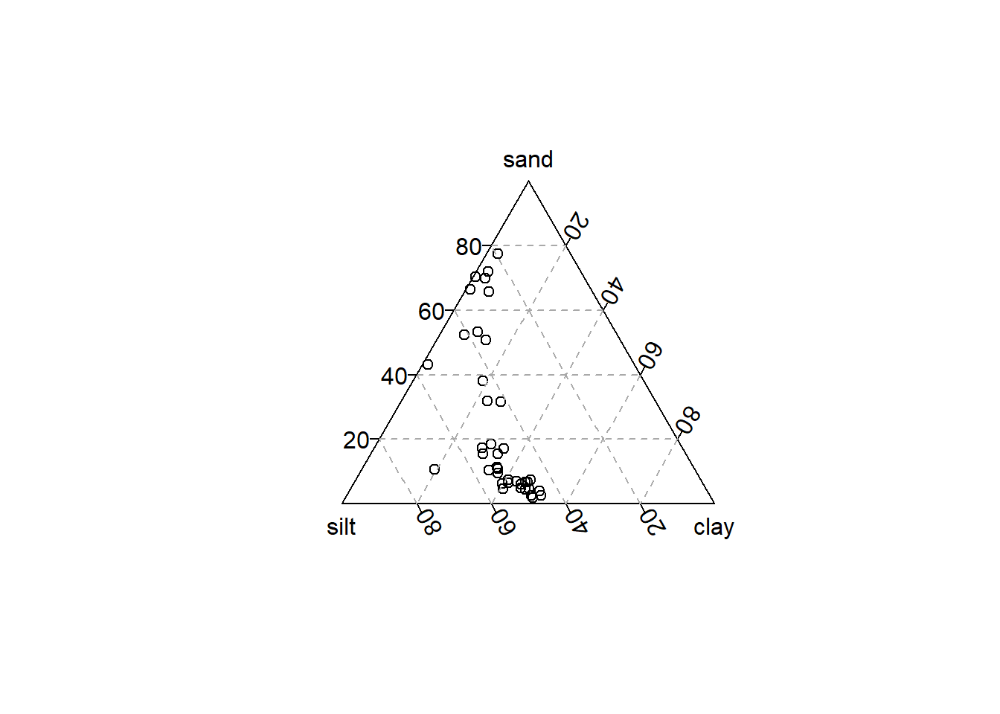
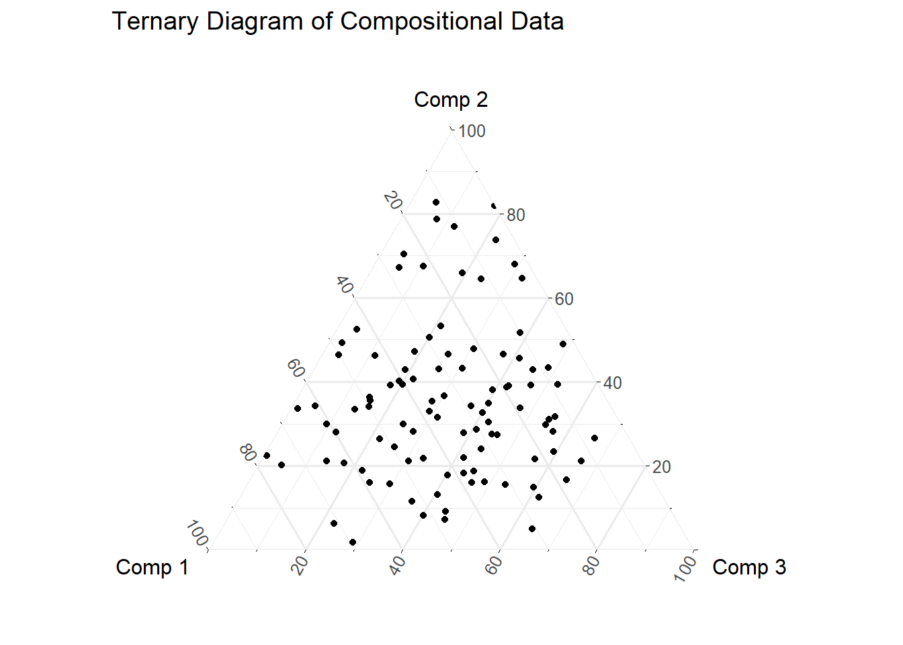

suppressPackageStartupMessages(library(compositions))
suppressPackageStartupMessages(library(tidyverse))
suppressPackageStartupMessages(library(isopleuros))Exploring compositional data, quarto blog posts, and Positron all at the same time for my own learning.
Aitchison, “The Statistical Analysis of Compositional Data”
Chapter 1
Load some datasets from Aitchison “The Statistical Analysis of Compositional Data” in the “compositions” package.
Data 1
Hongite and Kongite from chapter 1. A, B, C, D, and E are albite, blandite, cornite, daubite, and endite.
# Data 1
data("Hongite")
head(Hongite) A B C D E
1 48.8 31.700000 3.8 6.4 9.3
2 48.2 23.800000 9.0 9.2 9.8
3 37.0 9.100001 34.2 9.5 10.2
4 50.9 23.800000 7.2 10.1 8.0
5 44.2 38.300000 2.9 7.7 6.9
6 52.3 26.200000 4.2 12.5 4.8Data 2
data("Kongite")
head(Kongite) A B C D E
1 33.5 6.1 41.3 7.1 12.0
2 47.6 14.9 16.1 14.8 6.6
3 52.7 23.9 6.0 8.7 8.7
4 44.5 24.2 10.7 11.9 8.7
5 42.3 47.6 0.6 4.1 5.4
6 51.8 33.2 1.9 7.0 6.1Data 3
# depth is possible covariate
data("Boxite")
head(Boxite) A B C D E depth
1 43.5 25.1 14.7 10.0 6.7 1
2 41.1 27.5 13.9 9.5 8.0 2
3 41.5 20.1 20.6 11.1 6.7 3
4 33.9 37.8 11.1 11.5 5.7 4
5 46.5 16.0 15.6 14.3 7.6 5
6 45.3 19.4 14.8 13.5 9.3 6Data 4
data("Coxite")
head(Coxite) A B C D E depth porosity
1 44.2 31.9 5.4 10.5 8.000000 1 21.8
2 49.0 25.4 5.8 11.3 8.500000 2 25.2
3 50.2 24.8 5.7 11.1 8.200000 3 26.1
4 49.9 24.7 5.4 11.4 8.600001 4 26.3
5 48.5 27.8 5.9 10.2 7.600000 5 22.6
6 45.9 27.1 6.9 11.5 8.600001 6 21.4Data 5
Rows 1-3 are the compositions, and row 4 is a covariate (water depth) which may account for some of the variation in the compositions
data("ArcticLake")
head(ArcticLake) sand silt clay depth
1 77.5 19.5 3.0 10.4
2 71.9 24.9 3.2 11.7
3 50.7 36.1 13.2 12.8
4 52.2 40.9 6.6 13.0
5 70.0 26.5 3.5 15.7
6 66.5 32.2 1.3 16.3Ternary diagram
Re-creating Figure 1.2
# Reorder columns to sand, silt, clay
arctic_reordered <- ArcticLake[, c("silt", "clay", "sand")]
# Plot with reordered vertices
ternary_plot(arctic_reordered)
ternary_grid()
Testing something
# Load necessary library
if (!requireNamespace('ggtern', quietly = TRUE)) {
install.packages('ggtern')
}Registered S3 methods overwritten by 'ggtern':
method from
grid.draw.ggplot ggplot2
plot.ggplot ggplot2
print.ggplot ggplot2library(ggtern)Warning: package 'ggtern' was built under R version 4.4.3--
Remember to cite, run citation(package = 'ggtern') for further info.
--
Attaching package: 'ggtern'The following objects are masked from 'package:ggplot2':
aes, annotate, ggplot, ggplot_build, ggplot_gtable, ggplotGrob,
ggsave, layer_data, theme_bw, theme_classic, theme_dark,
theme_gray, theme_light, theme_linedraw, theme_minimal, theme_void# Set seed for reproducibility
set.seed(123)
# Generate compositional data for three components
n <- 100
comp1 <- runif(n)
comp2 <- runif(n)
comp3 <- runif(n)
# Normalize so all rows sum to 1
sum_components <- comp1 + comp2 + comp3
comp1 <- comp1 / sum_components
comp2 <- comp2 / sum_components
comp3 <- comp3 / sum_components
# Create data frame
comp_data <- data.frame(comp1, comp2, comp3)
# Plot ternary diagram
ggtern(data = comp_data, aes(x = comp1, y = comp2, z = comp3)) +
geom_point() +
labs(
title = "Ternary Diagram of Compositional Data",
x = "Comp 1",
y = "Comp 2",
z = "Comp 3"
) +
theme_minimal()